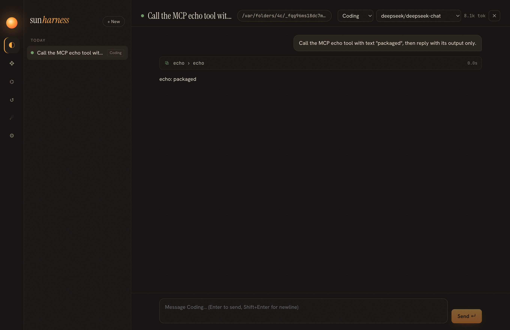

Iteration 7 · spec specs/014-packaging.md
12 · Packaging
A dev build that runs from a terminal is not an app. The packaged app runs from Finder with almost no environment, on a network that cannot download Electron, and without a paid signing certificate. Each of those needed a decision.
Build pipeline
main bundles core + MCP SDK] V --> O[out/** only, no node_modules] O --> B[electron-builder --dir
electronDist = local Electron] I[make-icon.cjs → icon.png] --> B B --> A[sun-harness.app] A --> C[ad-hoc codesign + verify] C --> L[~/Applications · open via LaunchServices]
Problems and decisions
electron-builder wants to download Electron again, and GitHub downloads fail here.
The workspace already has the exact Electron binary (fetched once through a mirror; see page 04). electronDist points the builder at it and electronVersion pins the version, so packaging is offline.
pnpm symlinks confuse dependency collection. How does the app get its runtime libraries?
It doesn't need any. The main bundle includes core and the MCP SDK (and its zod); the app's package.json has no runtime dependencies. A check of the bundle's imports shows only electron and node:* built-ins. Smaller surface, and nothing to resolve at runtime.
The app starts from Finder with PATH=/usr/bin:/bin. What breaks?
Everything the agent runs: MCP servers started with npx or node, pnpm test in the bash tool, Homebrew tools. augmentPath() appends the usual user locations (nvm's default version, Homebrew, ~/.local/bin, pnpm, bun, cargo, …) after the existing PATH. The packaged app was then launched with exactly that minimal PATH, and a live session ran an MCP server started as plain node. Its unit test caught a real duplicate: under nvm, Node's own folder and nvm's default bin are the same path.
No Apple Developer ID. Will it even open?
Apple Silicon refuses unsigned code, but accepts an ad-hoc signature on the machine that made it. The package script ad-hoc signs and verifies with codesign --verify --deep --strict; then open ~/Applications/sun-harness.app launches it through LaunchServices, the same path a double-click takes. Shipping to other Macs still needs a Developer ID and notarization; that is documented, not faked.

Test the shipped artifact in the shipped environment. "Works in dev" hid the minimal-PATH problem; launching the real binary with Finder's PATH exposed it at once.